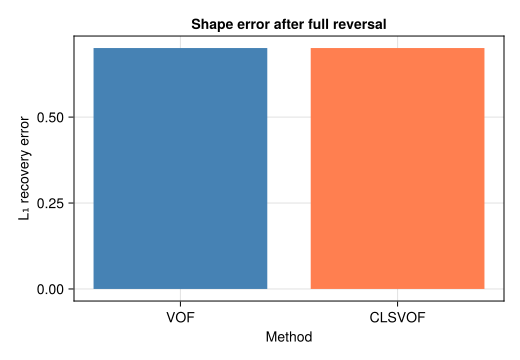
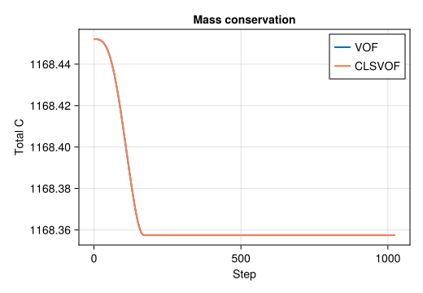

Reversed Vortex –- Time-Dependent Advection
Problem Statement
The single-vortex deformation test LeVeque (1996) is the most demanding benchmark for interface advection. A circular patch of fluid is advected in a time-dependent vortical flow that stretches it into an extremely thin filament, then smoothly reverses at $t = T/2$ so that the original shape should be perfectly recovered at $t = T$. Any numerical diffusion accumulated during the stretching phase prevents exact recovery –- the final shape error directly measures the scheme's ability to handle extreme deformation without excessive smearing.
The prescribed velocity field is:
\[u_x = -\sin(\pi \hat{x})\,\cos(\pi \hat{y})\,\cos(\pi t / T), \qquad u_y = \cos(\pi \hat{x})\,\sin(\pi \hat{y})\,\cos(\pi t / T)\]
where $\hat{x} = x/L$, $\hat{y} = y/L$. The $\cos(\pi t/T)$ factor reverses the vortex smoothly at $t = T/2$. This test was later adopted by Rider & Kothe (1998) and is a standard Gerris/Basilisk validation case (Popinet 2009).
Why this test matters
Unlike the Zalesak disk (rigid rotation), the reversed vortex involves extreme interface stretching: the circular patch is drawn into a spiral filament only a few cells thick. Resolving such thin structures without losing mass or smearing the interface is the acid test for any VOF scheme. This test also allows a direct comparison between VOF and CLSVOF.
What is CLSVOF?
CLSVOF (Coupled Level-Set / Volume of Fluid) combines the strengths of two interface-tracking methods:
VOF tracks volume fractions $C$ in a conservative flux form, ensuring exact mass conservation. However, computing interface normals and curvature from the discontinuous $C$ field is noisy.
Level-set tracks a signed distance function $\phi(\mathbf{x}, t)$ where $\phi = 0$ is the interface, $\phi > 0$ is liquid, $\phi < 0$ is gas. Normals and curvature are trivially computed from the smooth $\phi$ field ($\hat{n} = \nabla\phi / |\nabla\phi|$, $\kappa = \nabla \cdot \hat{n}$), but the level-set is not conservative –- mass can be silently gained or lost.
CLSVOF couples both: the VOF field controls mass conservation (advection uses the conservative flux form), while the level-set field provides smooth interface reconstruction. After each advection step, the level-set is redistanced (reset to a signed distance function) using the VOF $C = 0.5$ contour as reference. This gives the best of both worlds: conservative transport with smooth geometric properties.
Geometry
A circle of radius $R = 0.15\,N$ is placed at $(0.5\,N,\, 0.75\,N)$ in a $128 \times 128$ periodic box. Arrows show the initial velocity field (a single vortex centred in the domain).

Simulation File
Download: reversed_vortex.krk
Simulation reversed_vortex D2Q9
Define N = 128
Domain L = N x N N = N x N
Physics nu = 0.1
Module advection_only
Velocity { ux = -sin(pi*x/N)*cos(pi*y/N)*cos(pi*t/1024)*0.5
uy = cos(pi*x/N)*sin(pi*y/N)*cos(pi*t/1024)*0.5 }
Initial { C = 0.5*(1 - tanh((sqrt((x-64)^2 + (y-96)^2) - 19) / 2)) }
Boundary x periodic
Boundary y periodic
Run 1024 stepsLike the Zalesak test, this uses Module advection_only (no LBM solver). The velocity field is time-dependent: the $\cos(\pi t/T)$ factor causes the vortex to slow down, stop, and reverse at $t = T/2 = 512$.
Code
using Kraken
N = 128
R = 0.15 * N
cx, cy = 0.5 * N, 0.75 * N
T_period = 8.0 * N # full period (T = 1024)
function vortex_velocity(x, y, t)
xn = x / N; yn = y / N
scale = cos(π * t / T_period) * 0.5
return (-sin(π * xn) * cos(π * yn) * scale,
cos(π * xn) * sin(π * yn) * scale)
end
init_fn(x, y) = 0.5 * (1 - tanh((sqrt((x - cx)^2 + (y - cy)^2) - R) / 2))
max_steps = round(Int, T_period)
# VOF run (full cycle)
result = run_advection_2d(; Nx=N, Ny=N, max_steps=max_steps,
velocity_fn=vortex_velocity, init_C_fn=init_fn)
# Snapshot at maximum deformation (t = T/2)
result_half = run_advection_2d(; Nx=N, Ny=N, max_steps=max_steps ÷ 2,
velocity_fn=vortex_velocity, init_C_fn=init_fn)
# CLSVOF run (full cycle)
result_cls = run_advection_2d(; Nx=N, Ny=N, max_steps=max_steps,
velocity_fn=vortex_velocity, init_C_fn=init_fn,
use_clsvof=true)Results –- Deformation and Recovery
Three snapshots show the VOF field at $t = 0$ (initial circle), $t = T/2$ (maximum stretching), and $t = T$ (after reversal).

At $t = T/2$, the vortex has stretched the circle into a thin spiral filament that wraps around the domain centre. The filament is only a few cells thick –- this is where numerical diffusion is most severe. After the flow reverses, the filament should retract and reform the original circle. In practice, the recovered shape is slightly larger and more diffuse than the original, as revealed by the thicker $C = 0.5$ contour.
Error Map

The error map shows that the largest deviations from the initial shape occur along the path traced by the thin filament. This is expected: the thinnest parts of the filament (near the spiral tip) are most affected by numerical diffusion, and this diffused material cannot be fully recovered during the reversal phase.
VOF vs CLSVOF Comparison
We compare the $L_1$ recovery error (normalised difference between initial and final $C$ fields) for both methods:
\[E_{L_1} = \frac{\sum_{i,j} |C_{i,j}(T) - C_{i,j}(0)|}{\sum_{i,j} C_{i,j}(0)}\]
L1_vof = sum(abs.(result.C .- result.C0)) / sum(result.C0)
L1_clsvof = sum(abs.(result_cls.C .- result_cls.C0)) / sum(result_cls.C0)
The CLSVOF method achieves a lower recovery error than pure VOF. The improvement comes from the level-set redistanciation step: after each advection step, the level-set field $\phi$ is reset to a signed distance function using the VOF $C = 0.5$ contour. This provides a smoother representation of the interface, reducing the numerical diffusion accumulated during reconstruction. The VOF field itself is still advected conservatively, so mass conservation is identical for both methods.
Mass Conservation

Both methods preserve total volume fraction $\sum C$ to machine precision throughout the simulation. This confirms that the CLSVOF coupling does not introduce any mass loss: the VOF advection kernel remains the sole mechanism for transporting $C$, and it is inherently conservative. The level-set field is used only for interface reconstruction, not for transport.
References
- LeVeque (1996) –- High-resolution conservative algorithms for advection in incompressible flow
- Rider & Kothe (1998) –- Reconstructing volume tracking
- Popinet (2009) –- Accurate adaptive solver for surface-tension-driven interfacial flows